A 802-es számú Szent Korona cserkészcsapat honlapján jársz. Csapatunk Gödöllőn működik, a város és a környék fiataljai, gyerekei alkotják, több mint 400-an.
A cserkészet egy önkéntességen alapuló ifjúsági nevelőmozgalom, ami politikától és vallási felekezettől függetlenül a fiatalok egészséges felnőtté és hasznos állampolgárrá válását kívánja segíteni.
Bővebben a cserkészetről itt olvashatsz.
Érdekes, izgalmas, erőt próbáló és agyat megmozgató programokon való részvételt egy vidám és szeretetteljes közösségben, lehetőséget országos és nemzetközi programokon való részvételre, ezek által lehetőséget új arcok és önmagad megismerésére.
A hetente tartott őrsgyűlésen túl minden félévben vannak raji és csapat-szinten szervezett programok: kirándulások, portyák („ottalvós túra”), barlangászás, sportnap vagy éppen kézműveskedés. Az egész éves aktivitás jutalma pedig a nyári, 10 napos tábor, ahol megtanulunk a természettel összhangban élni, és ahol úgy összekovácsolódik a társaság, hogy a végén alig akarunk hazamenni.
Gödöllőt szerte a világon megjelölik térképükön a cserkészek: a negyedik cserkész világtalálkozót itt rendezték meg, a világ akkor volt legrátermettebb ifjainak lábnyomaiba lépünk mi, gödöllői cserkészek. Nagy megtiszteltetésnek érezzük azt is, hogy az ország tiszteletbeli főcserkésze, gróf dr. Teleki Pál a máriabesnyői temetőt választotta végső nyughelyül. Minden év április 4-én megemlékezünk róla és munkásságáról.
Csapatunk a gödöllői Római Katolikus Egyházközség támogatásával működik, így aktív tagjai lehetünk a sajátunkon túl a plébánia közösségének is, és a cserkészet Gödöllőhöz fűző hagyománynak köszönhetően rendszeresen megjelenünk a különböző nemzeti ünnepek és emléknapok alkalmából rendezett városi eseményeken.
Jó munkát!
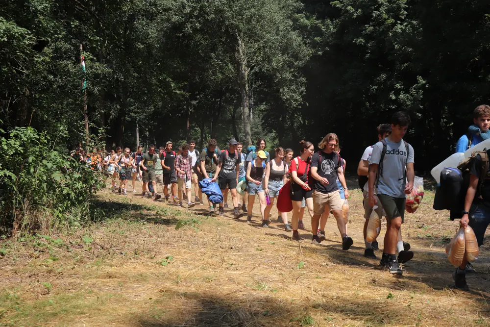
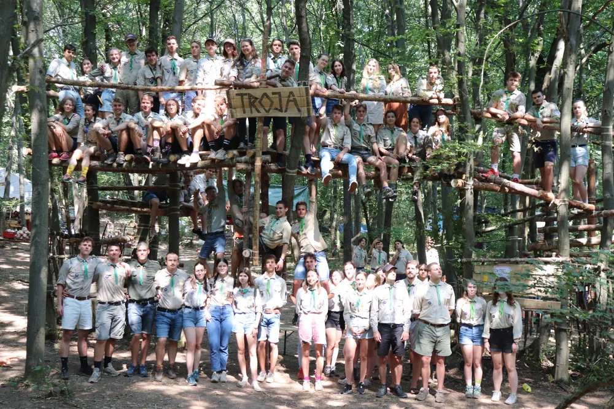
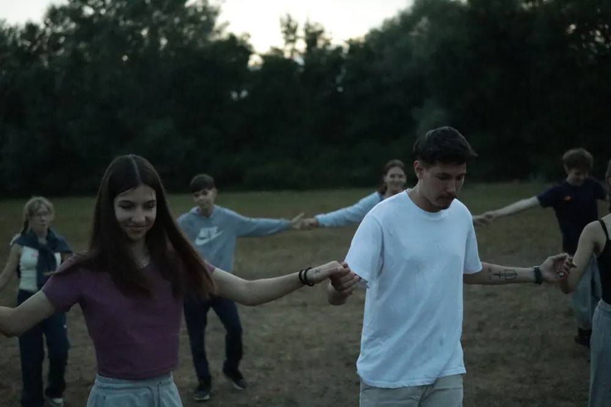
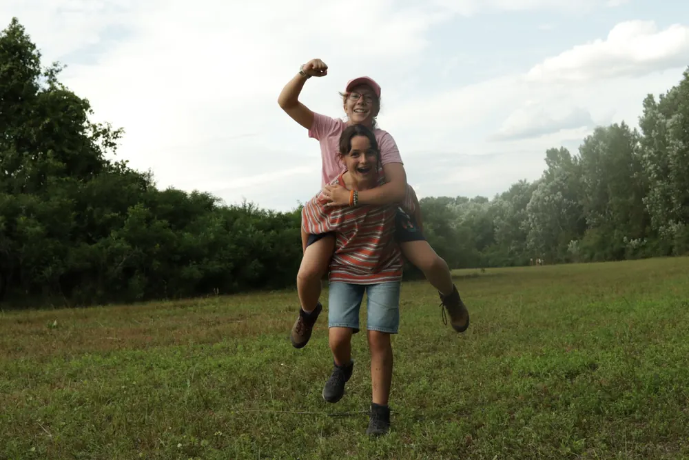
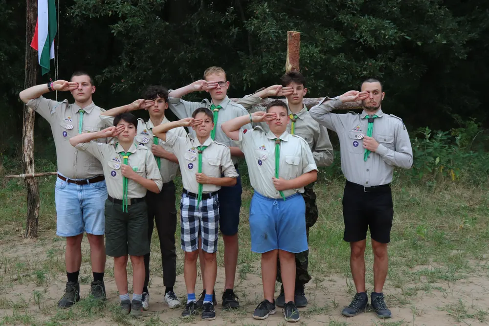
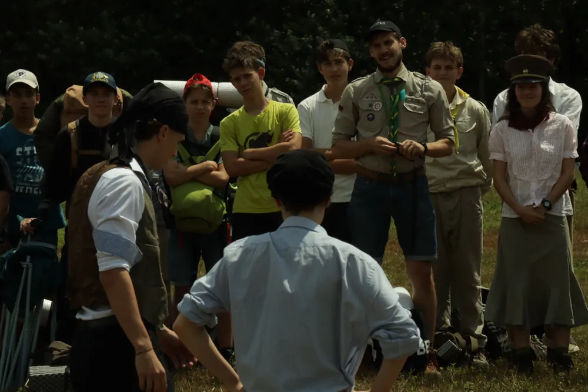
A cserkészet önkéntes, vallásos, pártpolitikától független ifjúsági mozgalom, amely nyitott mindenki számára származástól, nemtől, társadalmi és vagyoni helyzettől, valamint vallási meggyőződéstől függetlenül.
A cserkészet a világ legnagyobb gyermek- és ifjúsági mozgalma. A világ több, mint 200 országában 38 millió cserkész dolgozik egy közös célért: segíteni a gyermekeket és fiatalokat, hogy aktív és elkötelezett felnőttekké váljanak. A Magyar Cserkészszövetség tagja a Cserkészmozgalom Világszervezetének (World Organization of the Scout Movement), amely az ENSZ tanácsadó tagja.
A Magyar Cserkészszövetség több mint 200 csapatában közel 15 000 cserkész tevékenykedik, az ország minden megyéjében.
A magyarországi cserkészmozgalom célja, hogy a társadalmat olyan életrevaló, elkötelezett, felelős, egészséges polgárok alkossák, akiknek fontos, hogy önmaguk folyamatos nevelése által az Isten felé növekedjenek. Ennek érdekében életmodellt nyújtunk, illetve ifjúságnevelést végzünk önkénteseink segítségével. Magyarországon a helyi közösségekkel együttműködve 4. osztálytól mindenki számára nyújtjuk ezt, aki nyitott elveinkre és közössége életében tevékenyen részt vállal.
Mindehhez saját nem-formális nevelési módszerünket, a cserkészmódszert hívjuk segítségül, amely a következő elemekből áll:
A cserkészet pedagógiai alapjait több, mint 100 éve fektette le az angol Robert Baden-Powell, de kiscsoportos rendszeren és cselekedve tanuláson alapuló cserkészmódszer aktuálisabb, mint valaha!
A cserkészet 1907-es születése óta a világ összes cserkésze fogadalmat tesz, hogy megfelel a cserkészet eszméinek és betartja a cserkésztörvényt. A magyar cserkészfogadalom szövege:
„Én …. fogadom, hogy híven teljesítem kötelességeimet, amelyekkel Istennek, Hazámnak és embertársaimnak tartozom. Minden lehetőt megteszek, hogy másokon segítsek. Ismerem a cserkésztörvényt és azt mindenkor megtartom.”
A cserkész jelszót – „Légy résen” – számtalan nyelven több millió cserkész használja. A cserkészek egymással bal kézzel fognak kezet, jobb kezük három ujját tisztelgésre emelve. Ez a három ujj jelképezi kötelességeiket Istennel, hazájukkal és embertársaikkal szemben. A magyar cserkészek sajátossága a „Jó munkát” köszönés.
A cserkészliliom a cserkészet legismertebb jelképe. A helyes irányt mutatja, mivel ezt a jelképet gyakran használták az iránytűkön az északi irány jelölésére. A liliom három ága a cserkészfogadalom három részét jelképezi: kötelességteljesítés (Isten, haza és embertárs iránt), segítőkészség, valamint a cserkésztörvény megtartása. A magyar cserkészliliomot a Szent Korona fogja össze.
A cserkészeket sokan egyenruhájukról ismerik. Az egyenruha célja, hogy elrejtse a társadalmi, nemzeti, vallási különbségeket, és éreztesse a cserkészekkel, hogy együtt egy világméretű testvériség tagjai. Emellett az egyenruhán található jelek információt is hordoznak, így leolvasható, hogy az illető hol cserkész, milyen feladatokra készült fel és milyen tisztséget tölt be, milyen tapasztalatai vannak és milyen rendezvényeken vett részt. A jelvények megszerzésére önmagunk fejlesztésével, képzésével, valamint a programokon való részvétellel van mód. A kisebbek számára felmutatnak egy lehetséges jövőképet, és megszerzésük motiváló erővel bír a cserkészek számára önmaguk fejlesztésében.
Az egyenruha alapja a cserkészing és a nyakkendő. Az ing jobb zsebén a WOSM jelvénye, a zseb fölött a háromszögletű Hungária jelvény található. A jobb ingujjon van a kerületi felvarró, csapatszám, csapatnév, raj- és őrsi jelvények, a bal ingujjon pedig a képesítési (próba- és vezetői) jelvények. Az ingre sok más jelvény is felvarrható.
Magyarországon a nyakkendő színe korosztályonként eltérő: a kiscserkészeké csapatonként választott (egyszínű vagy mintás, de a többi korosztályétól eltérő), a cserkészeké zöld, a vándoroké szürke, a felnőtteké barna színű.
Az egyenruhához cserkészkalap, nadrág és öv is tartozik.
Forrás: cserkesz.hu. Ha még részletesebben érdekel: cserkesz.hu/latogatok/magunkrol
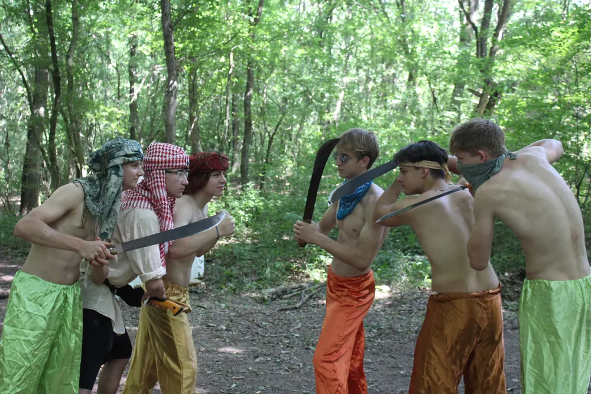
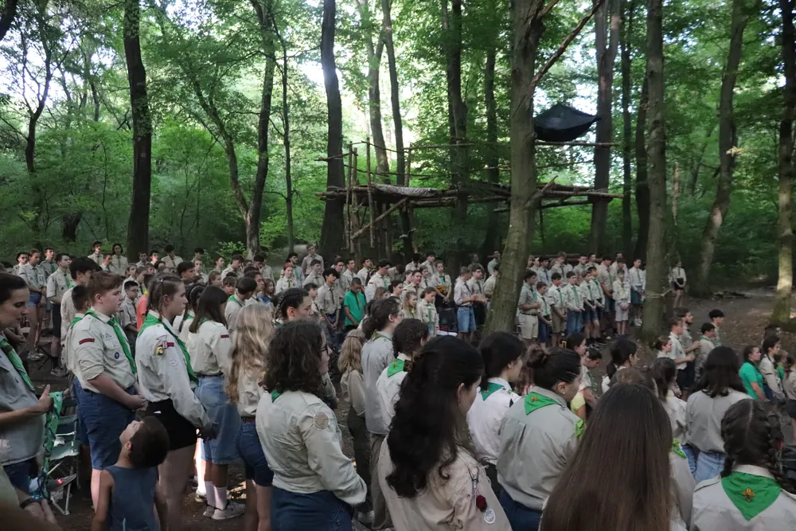
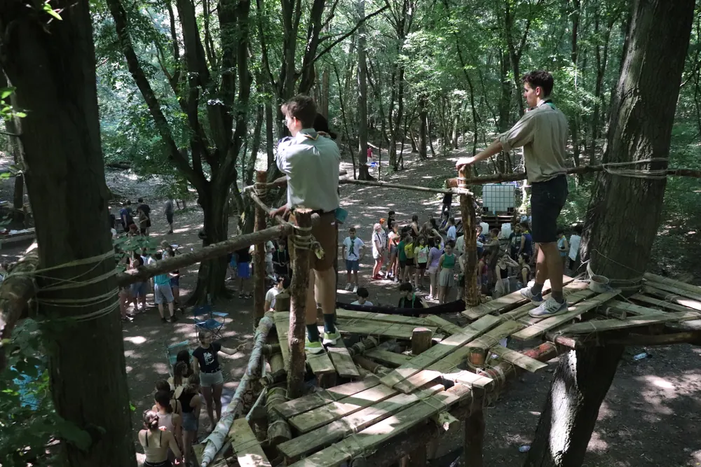
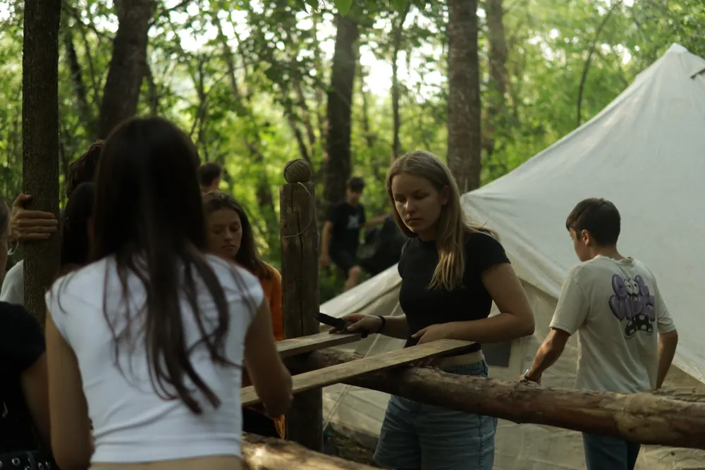
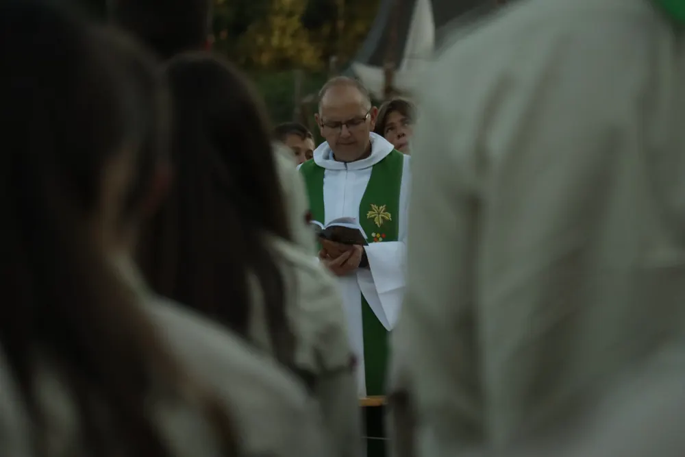
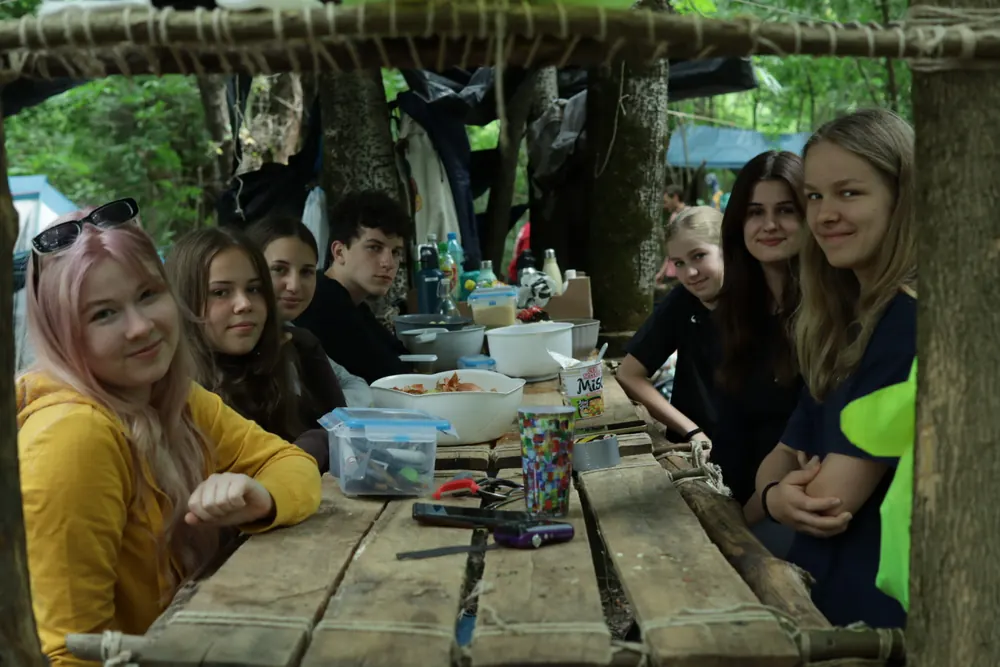
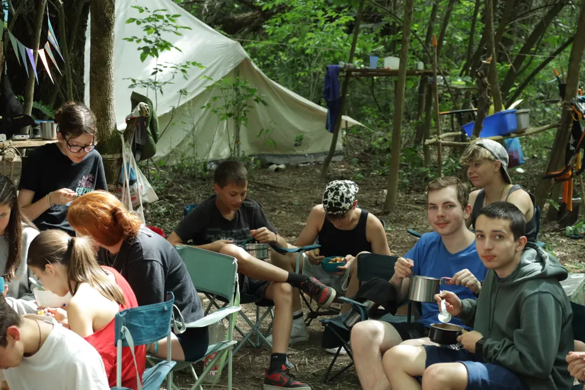
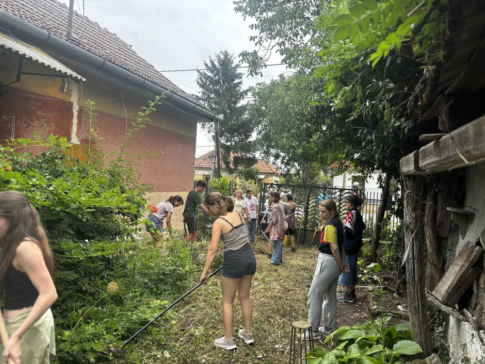
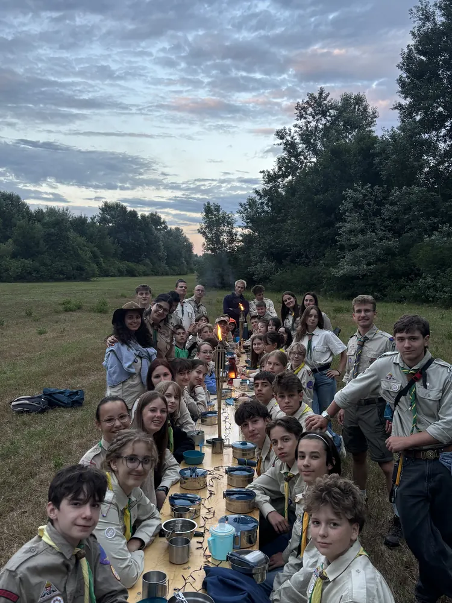
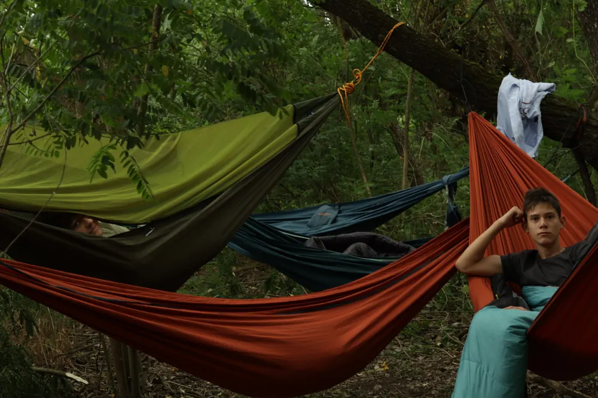
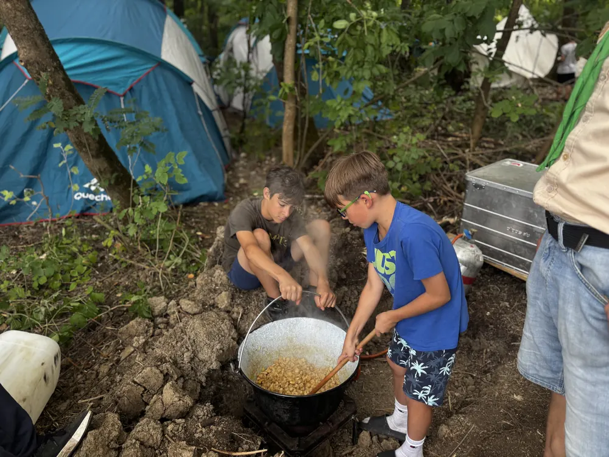
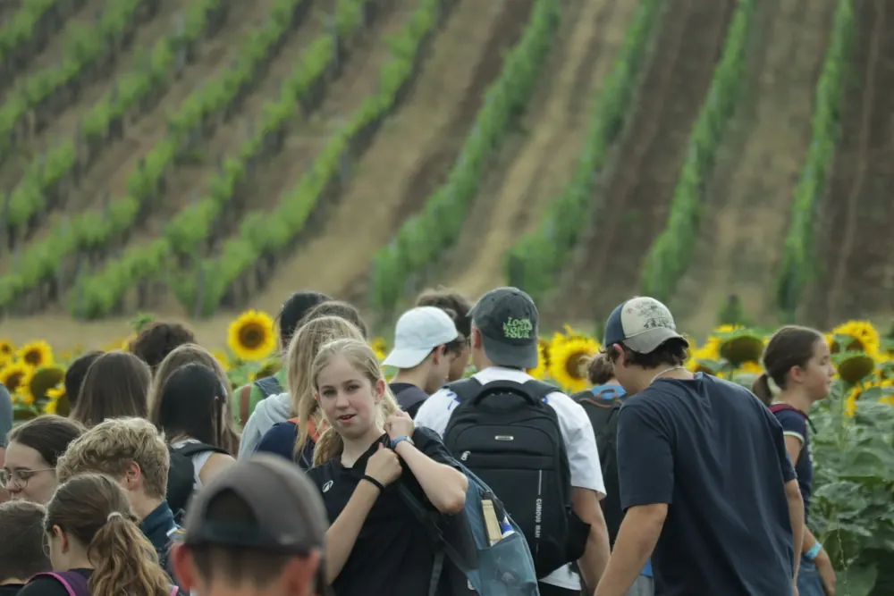